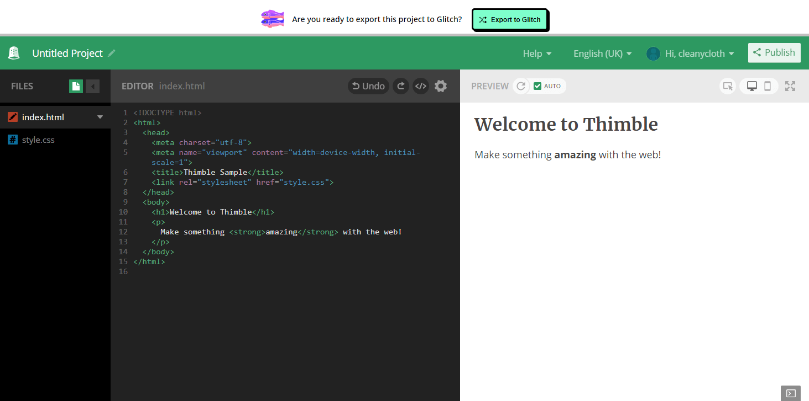
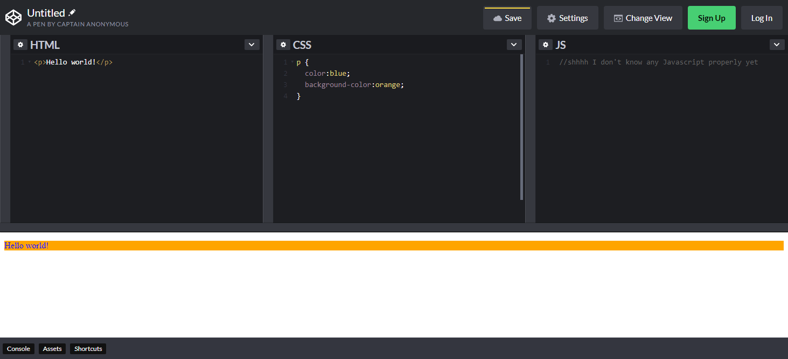

Thimble is an online tool used to write HTML, CSS, and JavaScript in a browser, allowing you to view changes on the fly.
A screenshot of Thimble, with the default "New Project" code written in it. Click on the image to get a better view.
Mozilla Thimble is an excellent tool for beginners who want to learn how to code a website, and more advanced people who need storage for files, additional pages, etc.
Mozilla, the creators of the Firefox web browser, are very focussed about making things free and Thimble is no exception. Thimble is completely free and there are seemingly no restrictions as to the content you can upload. For instance, you can upload multiple pictures, JavaScript files, HTML files etc. and link them all together.
Thimble has a very decent folder structure system and does not get in the way of your code. A bonus above Codepen (as you can see in the other review) is that you have to link the CSS manually, giving you flexibility to name it however you want and place it wherever you want.
You can choose to publish your work if you wish, or keep it tied to your account in secrecy. Thimble also has an option to change the preview size from desktop to mobile, very useful when testing dyanmic websites.
Thimble makes it super easy to download and upload files. You can right click in the file manager and upload and download separate files, or to download the entire website you can click on your name and click "Download files (.zip)" instead and it will send you your entire project in one go. Useful!
As mentioned, Thimble has support for JavaScript - in fact it has a full JavaScript console built right in. You can grab useful code snippets from the Thimble Library, and even take other people's Thimble projects and remix them.
You can even edit the CSS from any HTML tag you're using like <h2> for instance, by pressing CTRL/CMD + E over a tag. It will then pop the stylesheet up for the specific tag, useful if you've got a lot of CSS.
Overall, this has been a VERY useful tool in letting me understand how websites work and why things go wrong when they do (or when things go right). A brilliant tool that everyone should use.
Rating: 5/5 - Super useful bit of kit that does exactly what it says on the thimble.
UPDATE 11/01/19: As of the 16th of December 2019, Thimble will be replaced entirely with Glitch and all projects and account data will be removed. There is still time now to create projects or move existing ones to Glitch however. You can find out more about this here.
Codepen is also an online tool used to write HTML, CSS, and JavaScript within a browser and allows you to view changes on the fly, much like Thimble.
A screenshot of Codepen, with some example code written in it. Click on the image to get a better view.
Codepen is a great tool for coding all kinds of websites It has a folder structure system, allowing for uploads of images and other files your site might need.
However, for these more advanced features, you have to sign up for a pro account - the anonymous layout only allows for one page edit at a time with no structure.
Pro features start at $8 a month for the basic pro features, $12 a month for more advanced pro features, and then $26 a month for the most advanced features.
You can find out more about pro here. NOTE: I am not being sponsored for this review.
As I have not tried any of these Pro features, I am simply reviewing the free stuff.
The free account comes with unlimited public pens, posts, and collaborations, and templates. It comes with a debug view, an embed theme, and one project with 10 files. You need to buy a pro license to be able to upload more than that.
The user interface is simple and easy to use. Within seconds I was able to put text on the screen and format it to be blue with an orange background.
You can title your pen and save it, if you sign up.
Codepen also allows you to take anyone else's pen and remix it, or simply view it and see how others have made their sites.
I think the only problem I find with it is, in this mode at least, the CSS and HTML are connected automatically. In a way this is a good thing as it makes it quicker for you to do little tests, but if you want to export this code and use it elsewhere you'll still have to modify the code manually to add in the CSS link, name the files correctly, etc.
Overall, it has helped me quite a lot in my studies, and is a great learning tool for students and teachers alike, as well as in non-teaching roles.
Rating: 4/5 - A very useful tool that's simple to use, but the more advanced features are paywall locked.
{kind=link}
{kind=link}